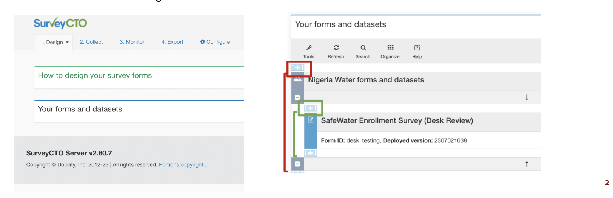

<div id="left"> <img src="img/DIL_logo_safespace_RGBFull Color.svg" alt="DIL logo" width="400"> </div> <h1>Survey CTO</h1>
## Session description - What is SurveyCTO and why we use it? - How to set up a SurveyCTO server? - What are some of the best practices? - Where can I find ressources?
## What is SurveyCTO and why we use it?
<p style="text-align: left;">SurveyCTO is a collection platform based on the ODK open source language. It is widely used to collect data on the field mainly because:</p> 1. <span style="font-weight: bold; color: #FBA320;">Security</span>: you can encrypt your forms 2. <span style="font-weight: bold; color: #FBA320;">Reliability</span>: you can collect the data without internet and on the field using tablets, smartphones or computers 3. <span style="font-weight: bold; color: #FBA320;">Support</span>: SurveyCTO has an extended blog and a support team that is available 24/7 4. <span style="font-weight: bold; color: #FBA320;">Credibility </span>: large number of institutions work with SurveyCTO on the field 5. <span style="font-weight: bold; color: #FBA320;">User friendly </span>: the ODK language makes it easy to desing a form, follow on real time your data collection and it is linked with Stata
## How to set up a SurveyCTO server?
<h2>How to set up a SurveyCTO server?</h2> <ul> <li class="fragment fade-in">DIL has its own server: <a href="mailto:dilserver@uchicago.edu">dilserver@uchicago.edu</a></li> <li class="fragment fade-in">You will need to access through cnet id</li> <li class="fragment fade-in"><a href="mailto:luizaandrade@uchicago.edu">Luiza</a> can help you including your server to the DIL repository</li> </ul> --- ## [SurveyCTO](https://fundaec.surveycto.com/index.html) login page <img src="img/01_first_page_scto.png" width = 80%> --- ## How to create your first survey in SurveyCTO? <div class="fragment fade-in"> <ul> <li></li> </ul> </div> --- ## Animation + highlight <p class="highlight fragment fade-in"> Ideally, decisions on folder structure and data storage plaftorms have already been made and documented ahead of time. <div class="highlight fragment fade-in"> If that was not the case, take a moment to really think about it before you place data data somewhere you'll never find it again </div> </p> --- ## Submitems - In R: - `write_rds` + `read_rds` (from `readr`, for `.rds` files) - `save` + `load` (for `.Rda` files) - In Stata: - `save` + `use` - `compress` - `saveold` - `iesave` (from `ietoolkit`) --- ## Add an image <img src="img/DIL_logo_safespace_RGBFull Color.svg" width = 50%>
## What are some of the best practices?
## Where can I find resources?
<p style="text-align: left;">Below you can find some resources we think might be useful when programming your surveys</p> 1. <span style="font-weight: bold; color: #FBA320;">[DIME Analytics SurveyCTO Style Guide](https://docs.google.com/document/d/1yVFdWugHV37vRaXmt-FnW80r015JVESR0bIHloFq378/edit#heading=h.ifwt68s1w4n)</span> 2. <span style="font-weight: bold; color: #FBA320;">[ODK docs](https://docs.getodk.org/)</span> 3. <span style="font-weight: bold; color: #FBA320;">[SurveyCTO support center](https://support.surveycto.com/hc/en-us)</span> 4. <span style="font-weight: bold; color: #FBA320;">[DIME's Introduction to SurveyCTO](https://osf.io/8e7bj) </span> 5. <span style="font-weight: bold; color: #FBA320;">[DIME's Advanced SurveyCTO Programming](https://osf.io/2nepd)</span> 6. Ask around the office! :)
## References - [How can we improve the quality of big data for development economics research? Experiences from traditional data collection can help!](https://blogs.worldbank.org/opendata/how-can-we-improve-quality-big-data-development-economics-research-experiences-traditional) - [Handling data securely](https://worldbank.github.io/dime-data-handbook/acquisition.html#handling-data-securely) - [Implementing data quality checks](https://worldbank.github.io/dime-data-handbook/processing.html#implementing-data-quality-checks) - [Processing confidential data](https://worldbank.github.io/dime-data-handbook/processing.html#processing-confidential-data) - [Preparing data for analysis](https://worldbank.github.io/dime-data-handbook/processing.html#preparing-data-for-analysis)
## THIS IS THE END OF THE PPT DON'T TOUCH THINGS BELOW THIS LINE!! This is my second html coding experience. Yaayyy!